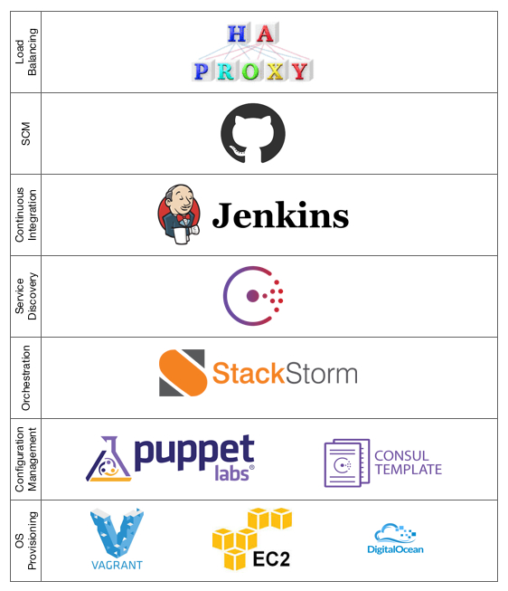
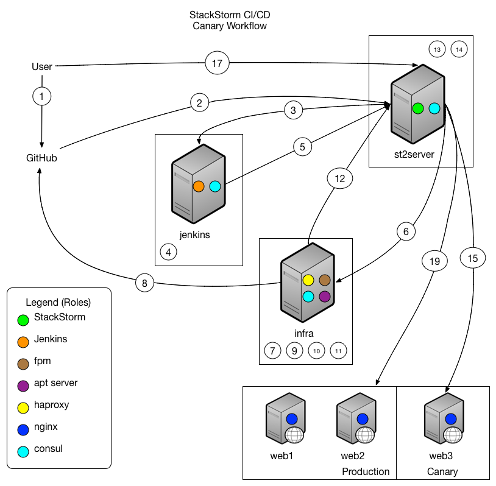

January 20, 2015
by James Fryman
There have been so many times when I have been on both the receiving end and giving end of this conversation, and it goes something like this:
Me: Man, this awesome toolchain at Company X really makes it easy to ship software!
Friend: How can I get my hands on that hotness!?
Me: Well…. um…
And the conversation shifts… and the involved engineers begin discussing and sharing the good and bad about the toolchain, things that they want to do, how it’s helped… you get the idea. Unfortunately, the best that the receiver is going to get are the abstract ideas about these tools. Wonderful after-work discussion, but really horrible in actually helping share craft to make all of our jobs easier and more efficient.
Let’s face it. If it’s difficult to share small code snippets with each other, forget about it when talking about trying to share entire process toolchains. Oftentimes, they are hyper-specialized to a specific company, tightly coupled with systems. There has to be a better way to share operational patterns while allowing for the tweaks and knobs that are unique to each company.
This is a problem begging to be solved, and we’re taking a pass at it. And what better way to do that then to show off what can be done with StackStorm with a Continuous Delivery/Continuous Integration Pipeline.
This CI/CD Workflow is designed as a generic packaging and deployment pipeline. The aim here is to create a pipeline flexible enough to be able to push code of any type through, and prepare it for rapid deployment and management via StackStorm.
This pipeline uses the Canary pattern. In the canary pattern, code is deployed to a small subset of users before being ultimately rolled out to production. This allows for users to do testing on a smaller surface area and discover problems at small scale before they become large scale.
This workflow subscribes to the ‘Convention over Configuration’ approach to the world. Any project should be able to be used by this pipeline, assuming it follows these conventions:
All of this code is open-source, and available for you to explore and use as best as you can. The code for this operational pattern can be found in our StackStorm Showcase at https://github.com/stackstorm-showcase/cicd-canary.
This workflow was designed initially to cover the most generic use-case possible, and attempts to make few assumptions about the operating environment that this could be used in. Specifically:
Below is a list of components that make up the underlying infrastructure in aggregate, and shows how StackStorm fits into the overall picture of asset management. Many of the tools here were chosen to allow use in an isolated, local environment.

Who doesn’t love process flows? Oftentimes, a picture says much more than words can. But, in the event that you also like words… the workflow in complete is listed below. As you’ll see below, all of the items are very small in nature, and different tools are combined to create a robust toolchain.

User waits for any external alarms to fire (New Relic, Nagios, etc).
If no failures, user deploys new package to production.
The architecture decisions in this pipeline are pretty arbitrary. Every infrastructure is slightly different, which is part of what makes the problem of sharing infrastructure patterns all that much more difficult. But, what we hope is illustrated here is just how easy it is to swap out different components of the stack.
Having problems with Jenkins? Get rid of it. Want to try out containers? Add it to the workflow/pipeline. Composing complex pipelines is now getting easier. This workflow may not fit your needs completely, but it should get you quite a bit further. On top of that, all of the code adheres to the ‘Infrastructure as Code’ ethos, and Pull Requests are gladly accepted.
bash scripts are a great way to get started with automation, and to quickly prototype things you need to get done. No doubt about it, we are huge fans of all things shell over here at StackStorm! The downside though is that over time, these scripts become a bit kludgy and difficult to manage. With StackStorm, we integrate with many of these soon-to-be or already written scripts, but we take responsibility for things like auditing, logging, user interfaces with help, an API and reliability and for tying them into a broader pipeline via a rules engine and workflow. We make it so that the shell scripts can focus on doing what they are great at doing… the quick and dirty stuff.
It’s true. Jenkins has a lot of the workflow management inside of it, and has proven to be robust in creating great delivery stories. We certainly tip our hat to the efforts there. StackStorm provides additional benefits in a few key areas:
Respond to additional events. StackStorm goes above and beyond Jenkins… adding the ability to take in additional information about events happening in your datacenter, and to use that to make additional decisions.
One of the more interesting benefits of a system like this is the ability to protect yourself… from yourself. How many times have you made the wrong move on a computer, and the subsequent day/week/month was not too pleasant? For me, far too many to care to say. In this pipeline, I built out logic that prevents a production deploy from happening straight to code. When the user issues a production deploy command, the only possible choice they have is to promote the currently running canary version.
This enforces good practice amongst the deployment pipeline. Combined with the fact that this policy is already documented as code, the ability to adapt and change policy is enforced, auditable, and easily adaptable.
I’m really excited about this. This is really only the tip of the iceberg in terms of what StackStorm can do for you, and where we are going! I am most interested in learning about how many of you take the code for this solution and start to adapt it for your organization. What things of this pattern did you use? Which ones did you toss? Most importantly – how much effort was it to build upon this pattern? Our goal is to make it such that we can get you around ~80% of the way with our platform and solutions like this, and the last mile is all yours to run with. So, if you do play with this, please let us know! We love feedback (the good kind and the best kind… but also the constructive kind if you have it).
There has been a ton of photos in here, and they often speak volumes more than words do. We’re continuing to refine our ChatOps story, and you’ll see some of that in this solution.
And if you are interested in seeing a demo of this in action, we have a video! Check it out here:
We’re continuing to work on new features to add to the core StackStorm platform. Over the next several months, we’ll be adding features like:
If you haven’t already, we invite you to check out our product by installing StackStorm and following the quick start instructions — it will take less than 30 minutes to give you a taste of our automation. Share your thoughts and ideas via moc.spuorgelgoognull@mrotskcats, #stackstorm on irc.freenode.net or on Twitter @Stack_Storm.
Until Next Time!
{kind=link}